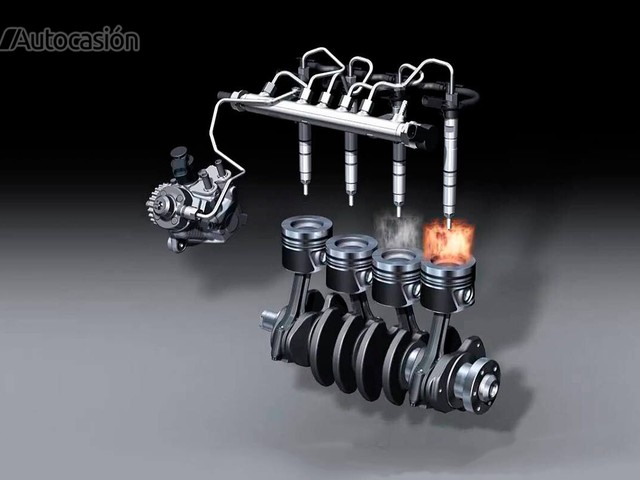

COMMON RAIL
Representamos el socio tecnológico ideal para cada problema de diésel para el taller de reparación de automóviles.
De hecho, contamos con los equipos y la experiencia necesarios para poder intervenir de forma rápida y profesional tanto en los sistemas de la antigua generación como en la última generación de sistemas Common Rail.
- Reparación de equipos de inyección Mecánicos
- Diagnostico y detección de Fallas sobre vehículos
- Reparación de equipos de inyección electrónicos
- Trabajamos con todas las marcas que se encuentran en el mercado
Somos un taller en línea con los altos estándares requeridos por BOSCH en el campo de la calificación de equipos y personal, y es una de las pocas compañías que cuenta con la autorización de BOSCH para proporcionar una garantía de instalación a todos nuestros clientes.
